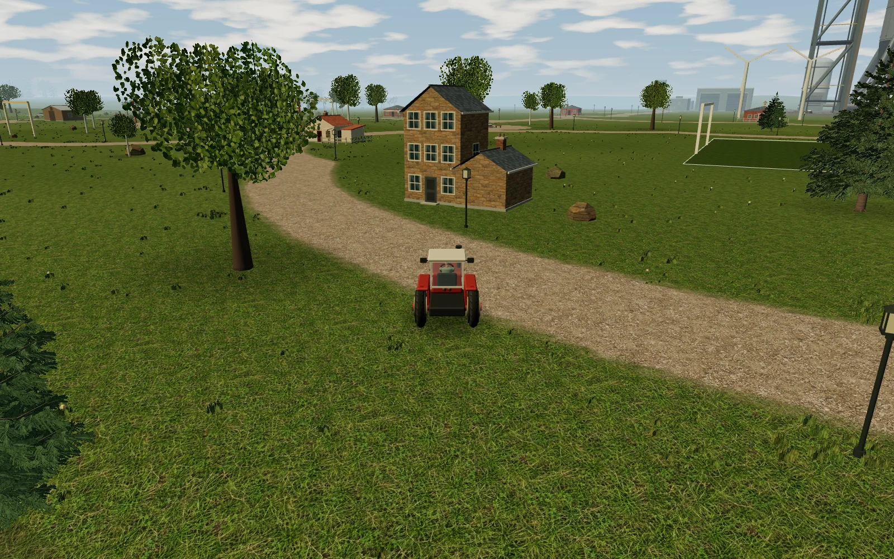
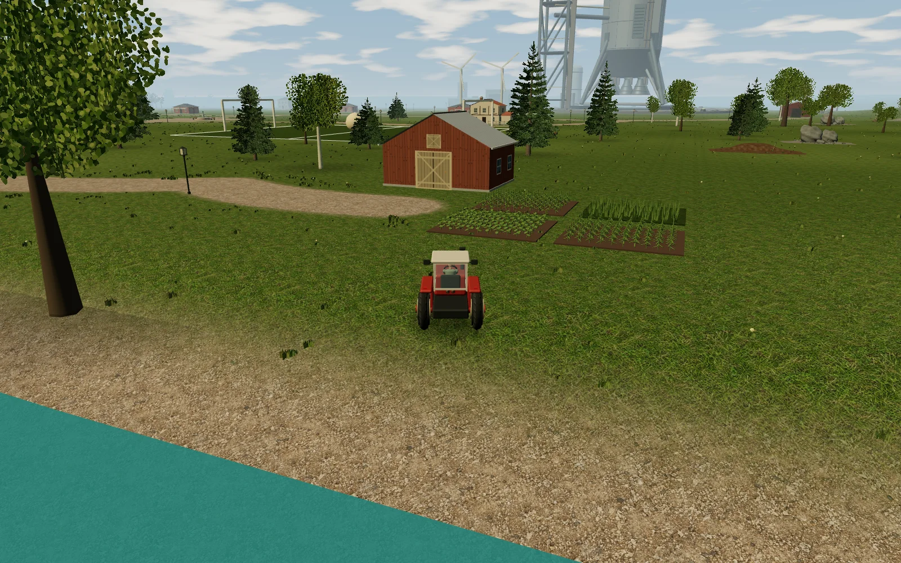
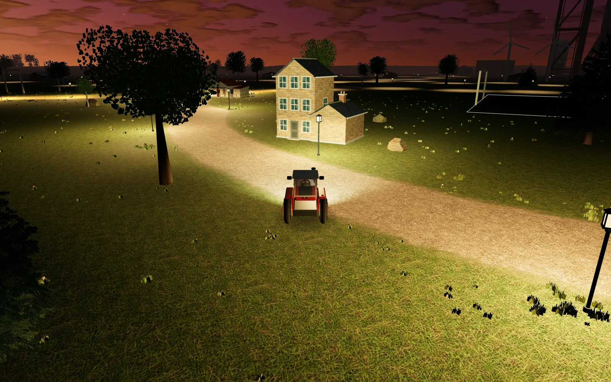
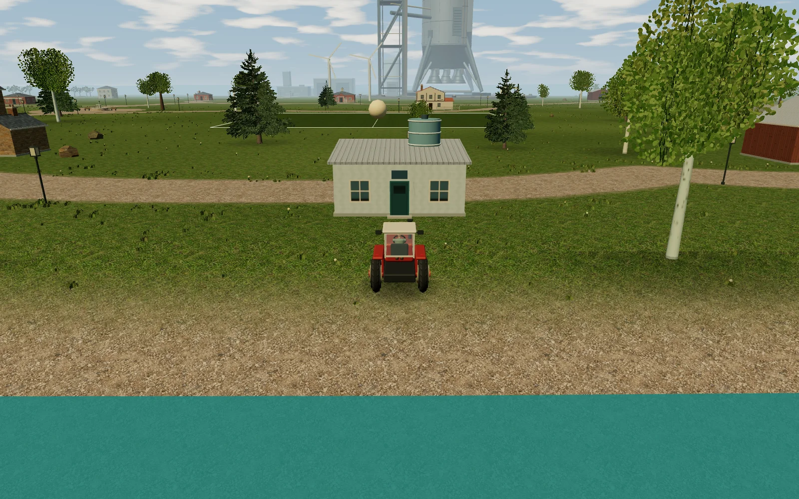
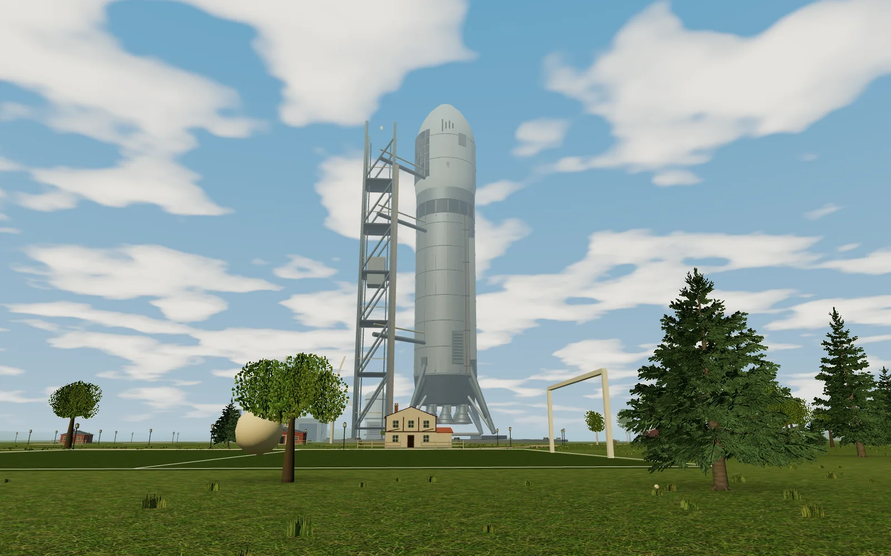
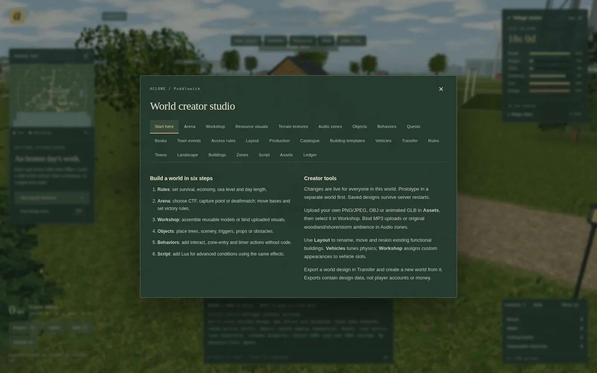

Make an honest living.
Learn a profession, take a paid shift, gather timber or spot a good trade. A shortage at the mill might be your next opportunity.
Follow the supply chain ↗FREE TO PLAY · IN YOUR BROWSER
A tractor, a few neighbours, and a world that keeps turning. Find your trade. Build something that matters. Make yourself at home.
No download. No subscription. A healthy disregard for grand destinies.

01 / FIND YOUR KIND OF BUSY
This is a multiplayer world you live in, not a level you finish. Share the roads with other players and optional AI neighbours. Your next ambition is up to you.

MORE THAN A FULL INVENTORY
A farm needs a harvest. A mill needs grain and workers. A bakery needs flour. Every link is a business someone can supply, work for or own.
Compare local prices, keep the stockroom supplied and fund wages. Business reports reveal missing inputs, backed-up stock and cash flow. Where the world allows it, bid at a property auction or rent a business to operate for a fixed term.
Read the economy guide ↗POSTCARDS FROM THE PARISH
Days turn into nights. Seasons change the fields. Sometimes the best plan is to turn on your headlights and see where the road goes.



02 / YOUR FIRST DAY, PRESUMABLY
Create a pilot, land in Puddlewick and get your bearings. Here’s a useful way to begin in the public economy world. The in-game First steps guide offers destinations suited to your qualifications and the world’s rules.
Visit the Odd Jobs Office for a short labour shift. The button shows what you’ll earn.
Buy food and water, then consume them from Inventory. Keep fuel handy. Government necessities offers pricier emergency supplies.
Learn a profession at school and inspect a funded job, or buy the right tools and gather resources to sell. Repeat gathering keeps loading until you stop or supplies or cargo space run out.
Stock your cottage or rented room with food and water, then enter before logging off. Hunger and thirst continue while you’re away.
WASD / ↑↓←→ Drive E Interact M Map I Inventory Enter Chat. Prefer a gamepad? Drive with the left stick, interact with A, and navigate menus with the D-pad. Remap controls in Options.
Touch steering and throttle, compact panels and an Actions menu. A modern browser with WebGL is required.
03 / THE WORLD IS YOURS, TOO
You don’t have to run a server to make a world. Start from a preset in the galaxy directory, then open the creator tools and make it your own.

Sculpt hills, paint surfaces and lay paths. Choose a building’s architecture, finish, size and rotation; new foundations adapt to gentle slopes.
Build an economy, a vehicle playground or a capture-the-flag arena. Tune survival, professions, production, combat and government. Add timed checkpoint courses, sponsor-funded prizes, or build/peace/war phases with saved round results.
Create models in the workshop or import GLB/OBJ assets and PNG/JPEG textures. Add quests and visual behavior rules, with Lua for deeper customization.
04 / A WHOLE GALAXY OF YOUR OWN
Aclone is free software, built to be run by its players. Host an instance for friends, open a public galaxy or experiment with a different kind of world.
Use the documented setup, keep persistent storage and put an HTTPS proxy in front. Back up your database and uploaded assets.
Host multiple worlds with their own rules and designs. AI neighbours are optional; enabling them requires separately funded provider APIs. An explicit maintenance pause freezes a world’s clocks while you work, then resumes without replaying the paused time.
Operators can establish trusted connections so pilots can visit other instances. Cross-server travel is opt-in, with rules set by the hosts.
How connected galaxies work ↗A FEW PRACTICAL THINGS
Playable now. Still growing.
Suggestions and contributions welcome.
Yes. There’s no game download to buy or subscription to play on the public instance. The source is available under GPL-3.0-or-later. If you host your own instance, you cover your server costs and any optional AI API usage.
The world persists. In Puddlewick, hunger, thirst and starvation continue offline. Go inside a home or rented room stocked with food and water before leaving. Other worlds can use different survival rules.
Your browser remembers your pilot. Set a password in Pilot & preferences, export your private pilot key, and add a verified recovery email where the host supports it. Keep that key private; a new pilot name creates a different character.
You can meet human players and, on servers that enable them, AI residents. AI characters are clearly labelled. They have personalities and memories, can chat, and try to make their way in the economy. Their behavior is still being improved; a self-sustaining NPC economy is a goal, not a guarantee.
Yes—there are touch driving controls and layouts for smaller screens. You need a browser with WebGL. Performance varies by device; try the Performance graphics setting if needed.
Aclone is a development alpha. Features and balancing are evolving, and bugs happen. It is independently inspired by A tractor / The Universal, with original code, art and sound. Report a problem or suggest an idea on GitHub.
THERE’S A PLACE FOR YOU HERE
Free to play · Multiplayer · Open source